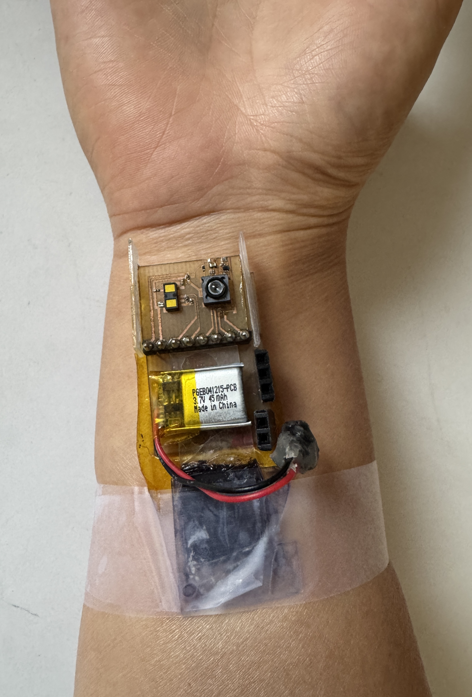
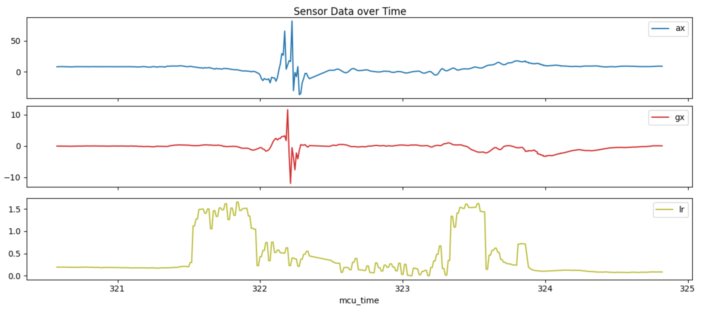
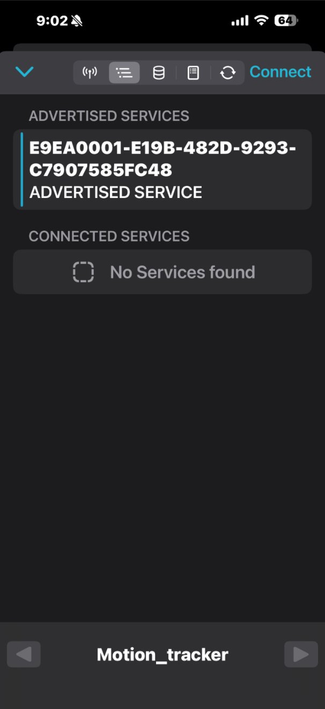
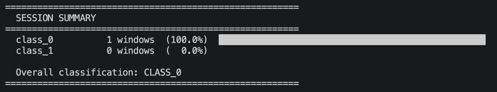

Abstract
Wearables are generally small and wireless so they don't get in the way of daily tasks. Some wearables like Meta's Ray Bans and Google's Fitbit will run models on device. My project consists of two parts: (1) improving the form factor of a wearable for sports use and (2) writing a classification model for basketball dribbling and shots. To do this, I sent bluetooth data from the wearable to a small microcontroller, eliminating the need for a bulky phone or computer to be present while wearing the device. Then I collected data while wearing the device and trained a small CNN model.
Hardware
Current Device
The wearable I am using to collect data was built by members of the UW Air Lab. It contains the following sensors:
| Sensor | Type of Data |
|---|---|
| Accelerometer | Acceleration |
| Gyroscope | Angular Velocity |
| Optic Flow Camera | Optical Flow |
| Time of Flight | Distance |
It uses a 3.7V 45 mAh LiPo battery for power and can send data wirelessly over Bluetooth. We previously ran a Python script on a computer to collect data. However, it is not feasible for basketball players to constantly be near a computer.
Improvements
To fix this issue, I decided to send the data from the wearable device to a small microcontroller instead of a computer. The microcontroller I used was the Seeed Studio XIAO ESP32-S3. I attached a 64 GB SD card to the microcontroller to store the data. This supports storing 23 hours of device data. The microcontroller's dimensions are 21 x 17.8 x 15mm, which means it is small enough to be attached to the wearable or fit in a pocket. One issue I ran into was the microcontroller was not able to receive data from the device unless it was a few centimeters apart. After reading through the documentation, I realized I needed to attach an antenna to the Seeed Studio board, hence the soldered on wire seen in the image below.

Data Collection
Once the hardware was all setup, I went to my neighborhood basketball court to collect data. I wrapped tape around the black plastic edge of the tracker and my right hand wrist (dominant shooting hand), making sure the optic flow camera faced away from my wrist so it was able to sense the motion of pixels.

Then I powered the Seeed Studio board with a small battery pack and turned on the wearable by connecting the lipo battery's red and black wires to the device's female header pins. All data collected was stored on the SD card attached to the Seeed Studio board. I started by dribling the basketball for five minutes, then I took nine shots halfway between the free throw line and the hoop. I made six out of the nine shots. To make it easier to label the data, I stopped the data collection after each shot so I had nine CSV files for the nine shots. To parse the dribbling data, I wrote a Python script that looked for peaks in the accelerometer data, which corresponded to each dribble.

Some of the raw data from one of the shots.
Software
The software for the wearable device was already written, so my task was to write software for the Seeed Studio board. I wrote INO code in Arduino IDE to upload to the microcontroller. I defined the pins for the SD card and the addresses for Bluetooth connection. One helpful tool I used was the nRF Connect for Mobile app which I used to find the characteristic UUID of the device.

Once I had the data collected, I trained a CNN model using TensorFlow on eight randomly selected dribbled segements and eight of the nine shooting CSV files. The model produced a .keras file which I used to make predictions on the remaining dribbling and shooting data. Below is an example of the model's prediction on a dribbling segment it wasn't trained on. CLASS_0 corresponds to dribbling and CLASS_1 corresponds to shooting.

I tested the model on the remaining shot that the model wasn't trained on and it was able to accurately label it as CLASS_1. I then ran it on twenty of the dribbling segments that the model wasn't trained on and it was able to label 19 of them as CLASS_0, which is a 95% accuracy.
Future Work
Future work on this project would be to collect more data and collect a more diverse range of basketball shots (eg. layup, 3-point shot, etc.). I would also like to run the model on board the microcontroller.